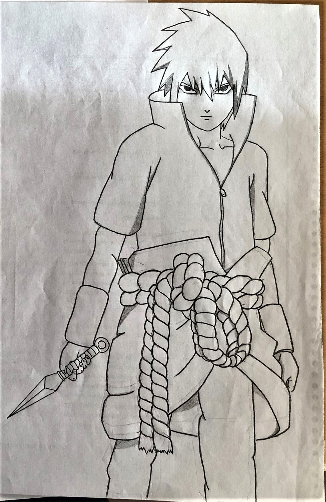
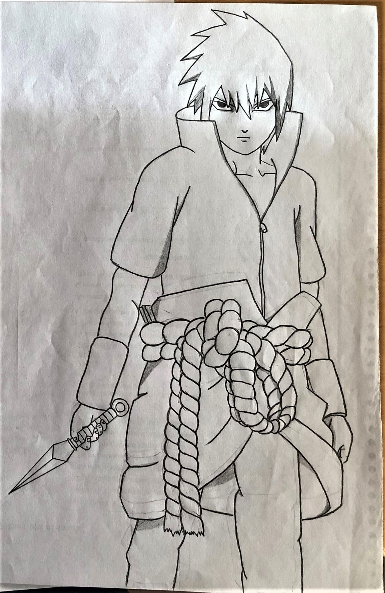

Tin Nguyen
About me

• Full name: Nguyen Duc Tin
• Date of birth: 01-06-2000
• Nationality: Vietnamese
• Contact me:
 Tin Nguyen
Tin NguyenMy name is Nguyen Duc Tin. I am 20 years old.
I was born in Ho Chi Minh city, 1 of the 2 largest cities in Vietnam.
I am the only child in my family.
My parents are now living in Vietnam and they sponsor my study here in VAMK.
Before attending university, I studied at Bui Thi Xuan High School in Ho Chi Minh city.
I come to Finland seeking for an international, professional environment where I can improve myself better,
and Vaasa is my destionation.
I have only lived here for only 2 months, but I already fell in love with this place.
I met new friends, gained new knowledge and experience.
In my opinion, Vaasa is such a wonderful, charming city.
( Hi! It's me !!! )
My hobbies
I am a curious guy. I'd love to try everything. Therefore, I have a lot of favorite occupation.
I love watching television series in my free time.
One of my most ideal series of all time is the famous
How I met your mother.
For me, How I Met Your Mother is just a must-watch series for everyone.
It is attractive, hilarious, it considerably helps me relax and even improve my English skills !

Besides, I'm also keen on arts, especially music and drawing. I can play guitar passably, and enjoy it.
I usually practice guitar in my spare time,
mostly on Youtube
and this commandably website
Songsterr.
( The guitar I bought the first week here in Finland. It costs 90 euro !!! )
In my leisure, I also enjoy reading Japanese mangas and comics by Marvel and DC.
Dragon balls
and Naruto
are my 2 most esteemed series. They are a memorable part of my childhood.
Especially, I fancy the feeling of re-drawing a character I like after reading a manga.
I have a collection of many pencil-drawings of Son Goku, Naruto,...
 

Additionally, traveling has been a core component of my life since I was a very young.
There is no doubt that a person gets more life experience by walking a mile than reading an entire book.
It’s a feeling of freedom.
It is very lucky of me that I have chances to visit many beautiful countries around the world. I travelled to
Thailand, Cambodia, Malaysia, Singapore, Japan and most recently, France.
( This is me, at Louvre Museum and Eiffel Tower, Paris, France )
My daily routine
| Time | Activity |
|---|---|
| 6:15 | Wake up, cleaning |
| 6:25 | Have breakfast |
| 6:45 | Brush my teeth, check e-mail |
| 7:05 | Prepare my lunch |
| 7:35 | get dressed |
| 7:45 | go to school by bus |
School starts at 8:15 usually, so I have to be ready before 7:45. It takes me 20 minutes to walk to the bus station
and 5 more minutes for the bus
| Time | Activity |
|---|---|
| 16:15 | School's out, heading home |
| 16:35 | Take a shower, change my clothes |
| 17:00 | Practice guitar |
| 18:00 | Prepare for dinner |
| 18:45 | Have dinner |
| 19:20 | Wash dishes |
| 19:40 | Do homework / self-studying |
| 21:40 | Cleaning, brush my teeth |
| 21:50 | Check e-mail |
| 22:00 | Watch a movie / play video games / Read book |
| 23:00 | Go to bed |